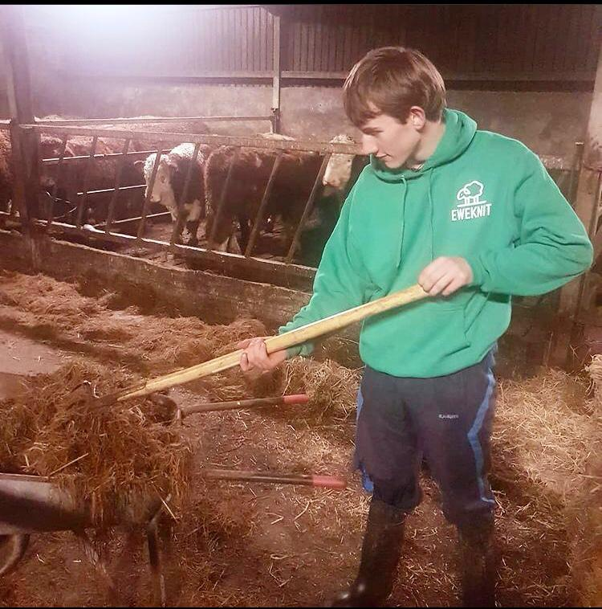
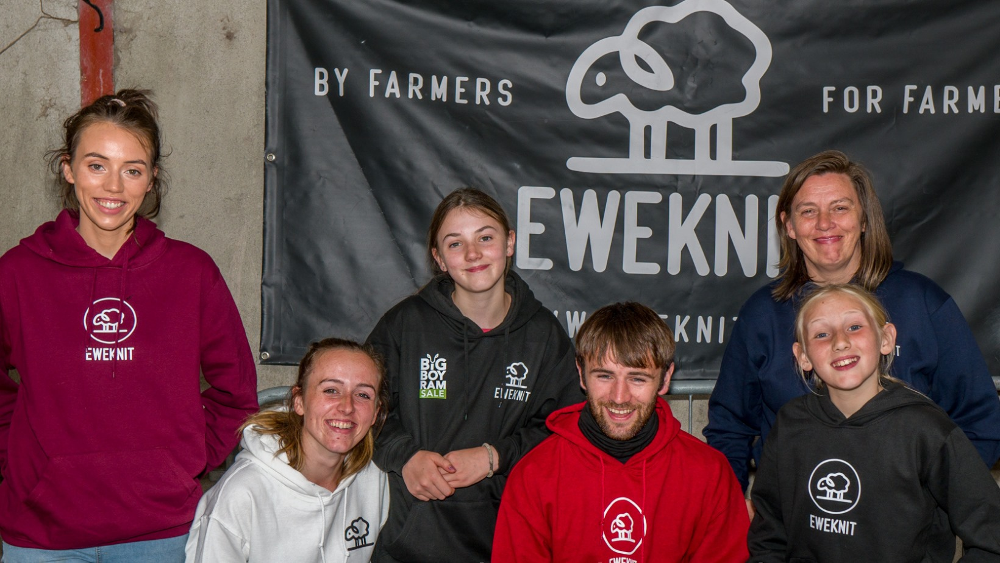
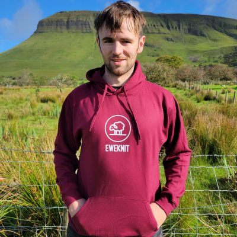

This business was started in 2018 by karol devaney who is from a family of sheep farmers in co sligo ireland. Karol saw a need to keep farmers looking and feeling stylish even while on the job, this multifunctional clothing caters to that very idea with a range of shirts, sweaters and hoodies in multiple sizes and colours and suitable for all ages. Therefore keeping you feeling and looking great all year round.
  